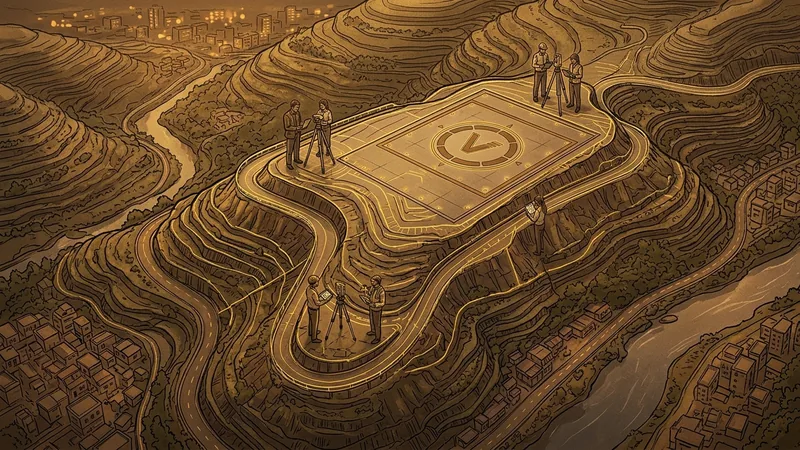

Vision

About Us
Connecting people. Enriching regions.
VAYUPORT is an aviation infrastructure company preparing the ground — literally — for electric air mobility in India, beginning with Northeast India.
Company
Who we are
VAYUPORT works across the full life of aviation ground infrastructure: converting existing helipads into vertiports, selecting and evaluating new sites, developing helipads, vertiports and hybrid aviation facilities, and then operating, maintaining and staffing them.
Alongside the physical infrastructure, we provide aviation and airspace advisory — airspace planning, air traffic management consultancy, and coordination support with Air Traffic Control and aviation authorities.
Our clients and stakeholders include infrastructure owners, developers, hospitality and healthcare operators, airport operators and public bodies who want to be ready for advanced air mobility.
Mission
To plan, develop and operate safe, sustainable and accessible aviation ground infrastructure that lets electric air mobility serve the communities that need it most.
Our team
The people behind VAYUPORT.
VAYUPORT is led by founders who share one conviction: air mobility is only as good as the ground infrastructure, and the discipline, that supports it.
Our approach
Four stages, one team.
Every facility moves through the same disciplined sequence — with the competent authorities involved wherever approvals are required.
- 01
Assess
Understand the site, the existing infrastructure and what the owner wants to achieve.
- 02
Plan
Develop practical options for helipads, vertiports or hybrid facilities, with airspace considerations included from the start.
- 03
Coordinate
Support engagement with ATC and the relevant aviation authorities, who alone grant approvals.
- 04
Develop & operate
Build the facility, then operate and maintain it so it stays safe and reliable.
Infrastructure philosophy
Practical, adaptable, operable.
Adapt before building new
Many regions already have helipads. Where it is technically feasible, upgrading them is faster and lighter on land than starting from scratch.
Design for today and tomorrow
Hybrid facilities can serve helicopters now and accommodate eVTOL aircraft as they enter service.
Connect to the ground
A vertiport works best when it links cleanly to roads, rail, airports and the places people actually need to reach.
Operable from day one
Operations, maintenance and staffing are planned alongside design — not added afterwards.
Sustainability approach
Lighter footprint, by design.
Electric aircraft remove direct emissions from the flight itself. The infrastructure around them should follow the same logic.
We favour re-using existing helipads where feasible, keeping new facilities compact, planning for electric charging from the outset, and including solar generation and efficient lighting where the site allows. Each project is assessed on its own conditions — we don’t make blanket environmental claims.

Northeast India focus
Where an hour saved matters most.
Northeast India’s hills, forests and rivers make it one of the country’s most beautiful regions — and one of the hardest to cross by road. Journeys between towns, district headquarters and hospitals can take many hours, and are often disrupted by weather.
That is why we are starting here. Well-sited helipads and vertiports could connect communities, support healthcare and tourism, and strengthen links to the rest of India.

Strategic partnerships
Partners will be listed here once agreements are formalised.
We only publish partnerships that are confirmed. If you are an aircraft developer, infrastructure owner, developer or public body, we’d welcome a conversation.
Work with VAYUPORT
Let’s build the future of air mobility together.
Whether you own a helipad, are planning a development, or are exploring regional air connectivity — we’d like to hear about your project.